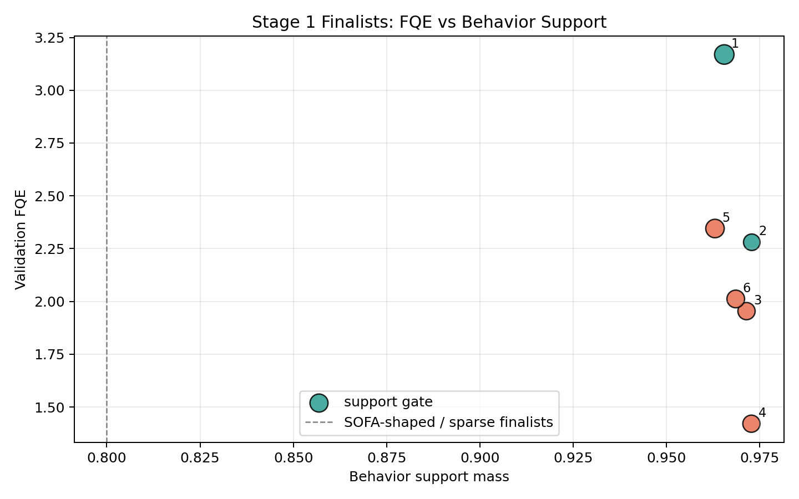
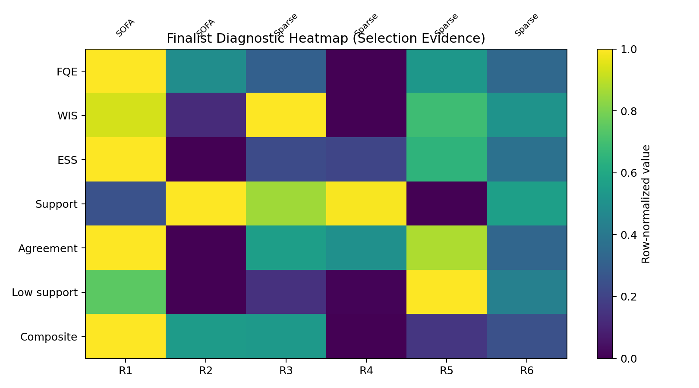

MIMIC-IV + IQL
Sepsis Dozaj Politikaları
Destek sınırlı klinik koşullarda çevrimdışı pekiştirmeli öğrenme iş akışı.
Final aday
iql_sofa_shaped_conservative_safe
Neden zor?
Klinik veri destek sınırı taşır
- Sepsis kararları gecikmeli mortalite sonucuna bağlanır.
- Daha ağır hastalar daha agresif tedavi aldığı için confounding oluşur.
- Çevrimdışı RL hastada keşif yapmaz; yalnız tarihsel yörüngeleri kullanır.
- Desteksiz sıvı-vazopresör kombinasyonları sayısal olarak iyi görünse bile klinik olarak güvenilmezdir.
10 adımlı protokol
Model değil, denetlenebilir iş akışı
Formülasyon
Sonlu ufuklu karar süreci
Her geçiş hasta durumunu, 25 ayrık tedavi aksiyonunu ve terminal/ara ödülü taşır.
M = (S, A, P, R, gamma)
(s_t, a_t, r_t, s_{t+1}, done_t)
Sıvı x vazopresör
25 ayrık tedavi kutusu
- Bin 0: tedavi yok.
- Sıfır dışı dozlar eğitim bölmesi çeyreklikleriyle Q1-Q4.
- Eşikler train üzerinde öğrenilir, validation/test üzerinde dondurulur.
Ödül tasarımı
Seyrek sonuca SOFA şekillendirmesi eklenir
Sparse
90 gün sağkalım +15, 90 gün mortalite -15.
SOFA-shaped
Terminal fayda korunur; ara adımlarda SOFA değişimi küçük sinyal üretir.
Kontrol
Shaping mortalite hedefinin yerini almaz; final seçim ortak terminal değerlendirmeye bağlanır.
Algoritma seçimi
IQL veri dışı aksiyon maksimumu almaz
- Value: expectile regression ile veri içindeki yüksek değerli aksiyonlara yaklaşır.
- Q: öğrenilen state-value hedefiyle güncellenir.
- Actor: avantaj ağırlıklı davranış klonlama ile politika çıkarır.
- Temperature arttıkça getiri potansiyeli ve destek dışına kayma riski birlikte artar.
Final tarama
18 aday, 6 finalist, 3 tohum
2 ödül
Sparse ve SOFA-shaped aynı terminal değerlendirme altında karşılaştırıldı.
3 LR rejimi
Konservatif, referans ve aktör-konservatif optimizasyon.
3 IQL ayarı
Güvenli, referans ve iyimser expectile-temperature çiftleri.
3 seed
Finalistler 42, 123 ve 456 tohumlarıyla yeniden ölçüldü.
Finalist seçimi
Yüksek değer tek başına yeterli değil
Seçim FQE/WIS ile destek, uyum, düşük destek uyarısı ve çeşitlilik slotlarını birlikte okur.
| Aday | FQE | WIS | Destek |
|---|---|---|---|
| SOFA conservative safe | 3.169 | 8.616 | 0.965 |
| SOFA conservative baseline | 2.280 | 7.009 | 0.973 |
| Sparse conservative safe | 1.954 | 8.740 | 0.971 |
| Sparse baseline safe | 2.345 | 8.125 | 0.963 |
OPE okuması
Değer ve destek birlikte raporlanır
Grafikler yüksek değer tahminlerinin destek kütlesiyle birlikte yorumlanmasını sağlar.

Üç tohumlu sonuç
Final konfigürasyon: SOFA + konservatif + güvenli
| Sıra | Konfigürasyon | Skor | FQE | WIS | ESS | Uyum |
|---|---|---|---|---|---|---|
| 1 | SOFA konservatif güvenli | 5.858 | 2.848 | 8.203 | 29.41 | 0.414 |
| 2 | SOFA konservatif referans | 5.288 | 2.366 | 8.286 | 26.12 | 0.404 |
| 3 | Sparse konservatif güvenli | 5.262 | 2.316 | 8.169 | 31.32 | 0.411 |
| 4 | Sparse konservatif referans | 5.033 | 2.050 | 8.536 | 26.10 | 0.401 |
Referans politikalar
Davranış klonlama yüksek WIS üretir ama ESS çöker

Aksiyon teşhisi
Politika klinisyeni kopyalamaz, ama çoğunlukla destek içinde kalır
- Destek kütlesi: 0.991.
- Tam-kutu uyum: 0.414.
- Desteklenmeyen aksiyon sapması: 0.009.


Belirsizlik
CI geniş, ESS düşük
WIS 95% CI = 4.963--10.817. ESS 50 eşiğinin altında olduğu için sonuç klinik üstünlük iddiası değildir.
Yeniden üretilebilirlik
Artifact odaklı deney yığını
Data
Polars, PyArrow, Parquet ve hasta düzeyi manifestolar.
Training
PyTorch, özelleştirilmiş d3rlpy, CUDA/MPS/auto cihaz seçimi.
Config
Hydra, run naming, seed ve checkpoint sözleşmeleri.
Tracking
MLflow, grafik paketi ve IEEE rapor artifact'leri.
Sınırlar
Bu bir yatak başı tedavi önerisi değildir
- Çalışma retrospektif ve gözlemseldir.
- Durum vektörü hekim niyetini ve ölçülmeyen karıştırıcıları tam kapsamaz.
- FQE/WIS prospektif klinik kanıt değildir.
- MIMIC-IV kullanımı PhysioNet, CITI ve DUA sınırları içinde kalmalıdır.
Sonraki araştırma
Daha büyük grid değil, belirsizlik-duyarlı politika güncellemesi
Dinamik expectile
Yoğun destekte agresif, seyrek bölgede davranışa yakın güncelleme.
Multi-step traces
Seyrek terminal mortalite sinyalini yörünge boyunca daha hızlı taşıma.
World model
Gerçekçi sınır durumlarını sentezleyerek değer fonksiyonuna güvenli marj öğretme.
Son mesaj
Destek sınırı görünürse sonuç daha dürüst olur.
Final okuma
IQL iş akışı klinik üstünlük değil; sızıntısız, destek-duyarlı, retrospektif politika dışı değerlendirme kanıtı üretir.